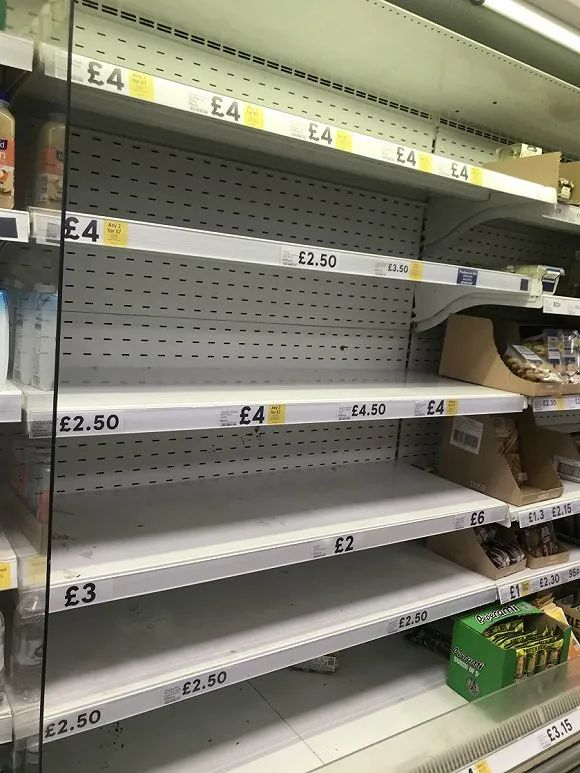
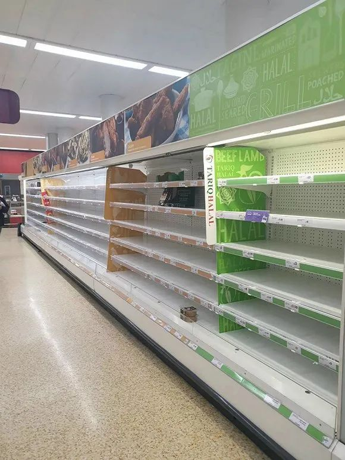

DC杂记 | 四舍五入又一周
原文链接 备份链接 昨日收到close buildings的通知，重新开放不知何时。最近每天从网上接受着周遭的消息，从窗外看出去只有一小方路面，虽然依旧车流不息，每天傍晚依旧跑步的跑步，遛狗的遛狗，遛娃的遛娃，但颇有咫尺千里之感。掐指一 …

3月18日，伦敦一家Sainsbury’s超市内的景象。来源：受访者提供
记者：卢奕贝 编辑：牙韩翔
“
危机时的囤货，本质上是我们试图控制局势的尝试，感觉到至少我们正在做某件事。
”
欧洲的超市已经被焦虑的人们抢购一空。英国时间3月17日早上7点，留学生Serena Huang前往了伦敦Uxbridge的一家乐购（Tesco）超市，想要补充一些日用品。虽然刚刚开门，但她发现在这家店内，鸡蛋、果蔬、罐头和意面都已被扫光，而厕纸、清洁剂的货架上也只剩下零星几份商品。
超市的补货已经完全跟不上人们的购买速度，连洗衣球的货架上都被贴上了红色标签，告知最早到货时间是3月20日周五。


洗衣球的货架上被贴上了红色标签，告知最早到货时间是3月20日周五。（图片来源：受访者提供）
大概两周前起，这样情况就已在英国大大小小的超市同时上演。而其余欧洲国家也随着疫情蔓延，陆续出现抢购潮。
意大利是欧洲疫情最早开始爆发的国家。自2月15日，意大利通报了3例确诊病例开始，恐慌开始在这个国家蔓延。2月20日左右，社交网络上开始出现意大利北部超市被抢购一空的各类信息，这也是该国最早出现确诊病历的地区。很快，随着疫情蔓延至意大利全国，被买空的超市也不断增多。
在接下来的半个月，抢购如同多米诺骨牌一样传导至欧洲各个国家。
界面新闻数据组曾整理过世界主要疫情国家累计确诊新冠肺炎病例情况，自3月开始，欧洲国家的确诊病例迅猛增长。而恐慌性购买、超市货架空无一物，在这些地方的新闻中陆续涌现。

据世界卫生组织数据，截至欧洲中部时间3月18日，全球累计报告确诊新型冠状病毒肺炎病例191127例，其中欧洲地区累计确诊74760例。
针对超市一直被抢空，几乎所有欧洲国家都再三向民众强调，当地的食物、货物是充足的，真的足够供应每个人的需求。
法国经济与金融部长Bruno Le Maire、农业与食品部长Didier Guillaume在3月15日召开的新闻发布会上表示，在未来的几天和几周内，食物与基本生活必需品的供给是能够保障的；德国食物和农业部长Julia Klokner也在同一天表示，囤积会导致浪费，德国目前没有供应短缺。而恐慌性抢购只会对供应链增加额外压力，如果每个人都理智一点，那么货架便会被及时补充。
在疫情最为严峻的意大利和西班牙，当地政府部门也表示不会缺货。意大利农业部门表示有74万个农场、7万家食品公司以及各类超商仍在运作，能保障供应。
班牙分销商和超市协会(Spanish Association for Distributors and Supermarkets)则表示当地的物流系统已经十分健全，在西班牙，超市的密度是每840名顾客附近就有一间，这意味着这个国家的超商有能力在极端环境下为每个国民服务。

3月18日，伦敦一家Sainsbury‘s超市内的景象。来源：受访者提供
然而，事实就是，面对疫情爆发所导致的恐慌性购买，超市们的货架一直无法被填满。
原因很简单，首先货品从制造商到仓库再到商店的物流速度，已经无法跟上需求的猛增。
普渡大学Krannert管理学院的教授Ananth Iyer曾表示，食物供应链本身并不需要担心，现代超市一般会储存最多4个月的主食产品，以保证整个系统的正常运行。但新鲜食品没有这种缓冲。杂货店无法储存它们，而农民也无法让它长的更快。一枚鸡蛋从孵化到被人吃掉，一需要三到四个月的时间。因此，对新鲜食品的需求过多可能意味着供应将无法跟上。
此外，如界面新闻曾经报告过，厕纸这类体积较大的日用消耗品，在现代社会也容易出现“被抢空”的情况。
事实上，大卖场不会为日用品准备足够多的存货。因为这类产品的商品周转率较高，也就是卖场进货入库到卖出的周期很短。所以，在极端的抢购情况下，一家超市仓库内的厕纸类货品是无法满足瞬间激增的需求。
而人手不足也会影响超商的补货速度。以超商们原本的人手安排，是不足以应付如今的抢购的。而疫情导致的在家办公、以及某些国家地区的封锁也让人手减少。在法国，有25-35%的员工由于学校关闭，要在家带小孩而只能在家办公。法国官方对此表示将考虑各类措施来增加人手。

伦敦一家超市内厕纸已被抢空。来源：受访者提供
面对困境，许多欧洲连锁超市已经开始行动起来。
3月15日，包括乐购Tesco、Sainsbury’s和Asda等在内的多家欧洲大型连锁超市，一起在多个国家的报纸上刊登了一封联名信，表示正在与政府和供应商紧密合作，以使食品被快速运输，并向旗下超商更频繁的送货，以确保货架上有货。而提供网上购物以及自主取货服务的同行们也正全力以赴。
他们也在恳求顾客在新冠肺炎疫期不要恐慌性购买。
“但是我们也需要您的帮助。我们要希望每个人都彼此谅解。我们了解您的担忧，但有时购买超出需要的商品可能意味着其他人将一无所获。如果我们大家一起努力，每个人都能买到足够的商品。”
同时，多家超市已经开始实施限购。总部位于德国的大型连锁超市Aldi规定，每个人只能买4件商品。公司CEO Giles Hurley于3月16日在Facebook上发表了长文声明，称希望暂时的限购能让更可能多的顾客每次到店时都有机会买到所需的东西。
此外，他还表示已经向供应商增加订单，仓库也在全力运转。“虽然员工们已经不停地向商店补货，但暴增的需求让我们很难保证货架上没有空缺。我们的所有门店都会每天多次补货，即使你今天去看没有货，在大部分情况下过几天也会有。”
其他超商如Tesco、Sainsbury’s和Asda等也已有类似举措，限购范围除消毒卫生用品外，还包括蔬菜、意面、厕纸等日常消耗品。
为降低感染风险，有超市开始实行分时段购物。以德国北威州Mülheiman der Ruhr的REWE超市为例，该超市规定早上6至9时，只属于“新冠高风险人群”的购物时间，即60岁以上和患有慢性病的人才能在这个时间段购物，其他人在9-21时可以购物，而且不可结伴来购物。
“消费者试图获得控制权，而紧急购买，本质上是我们试图控制局势的尝试。感觉到至少我们正在做某件事，我们正在积极进取，而紧急购买正是这样，这一点非常重要。”伦敦大学学院的消费者和商业心理学家Dimitrios Tsivrikos说。
未经授权 禁止转载

原文链接 备份链接 昨日收到close buildings的通知，重新开放不知何时。最近每天从网上接受着周遭的消息，从窗外看出去只有一小方路面，虽然依旧车流不息，每天傍晚依旧跑步的跑步，遛狗的遛狗，遛娃的遛娃，但颇有咫尺千里之感。掐指一 …
原文链接 备份链接 意大利确诊数破千时，大部分英国人还在隔岸观火，有人甚至拿新冠病毒开玩笑。如今英国人聚集的社交网络上多的是祈祷上帝保佑的推文。有人调侃说，老外都跟在华人后面逛超市，华人买什么他们就买什么 文 |《财经》驻英国特约作者 文 …
原文链接 备份链接 今天，湖北卫健委消息，武汉市新冠肺炎确诊人数，0，新增疑似，0，现有疑似，0。 “没有什么胜利可言，挺住意味着一切。”在漫长的冬天和半个春天之后，我们终于等到了这个我们之前的人生里，从来不曾期待过的数字。 今天，武汉确 …
原文链接 备份链接 所有的鱼现在同步在 allthefishnews.wordpress.com 更新并可通过邮件订阅。你可以复制上方链接浏览器打开获取订阅链接。 根据丁香医生，截至 3 月 19 日 22:19 时， …
原文链接 备份链接 【财新网】（记者 宿慧娴 综合）“震中”欧洲疫情仍在蔓延。疫情最严重的意大利，日新增确诊病例稍有回弹，紧随其后的西班牙病例仍在加速上升，一周内新增1万例，迟来的全面防疫将令西班牙医疗系统面临史无前例的考验。与此同时，美 …